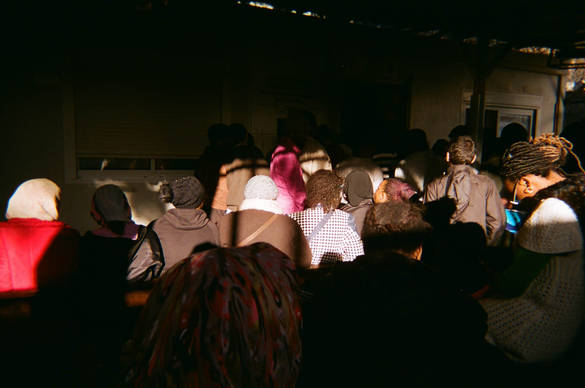
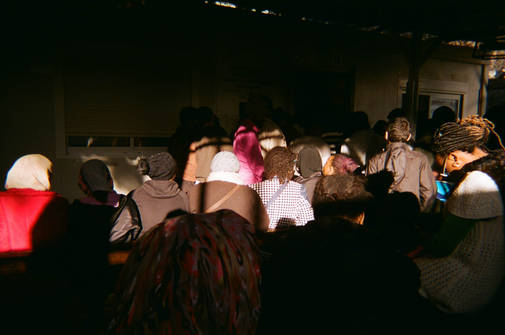
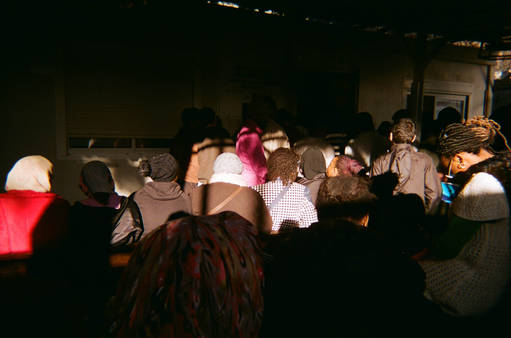

While volunteering in the refugee camp of Samos, I met a photo teacher and her students, children seeking asylum, at Still I Rise, a local NGO. They had been using disposable cameras to document their everyday lives in the camp. The images were stunning: raw, quiet, and deeply human. As we spent time with the photos, I suggested adding captions, not just to explain, but to let the kids shape how their stories were told. It gave the images even more depth and intention. They were planning a small exhibition in the school for their families and the local community, but I felt the project needed to reach further.

It seemed like one of the most direct and powerful ways for people outside the camp to connect with the realities, hopes, and journeys of displaced youth. I began turning the project into a global campaign, launching a call to action and coordinating exhibitions in over 30 cities across 10 countries for Universal Children’s Day in 2019, spanning from Australia to the United States, with many stops across Europe. Along the way, we partnered with organizations like DLA Piper and received coverage in The Guardian, The Washington Post, and The New Yorker.